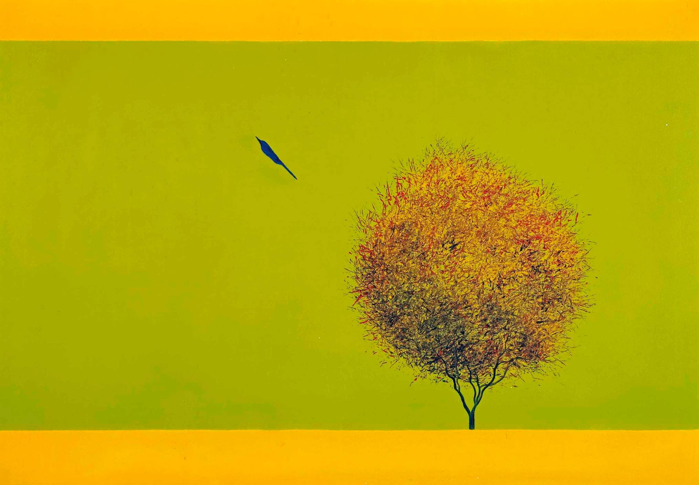
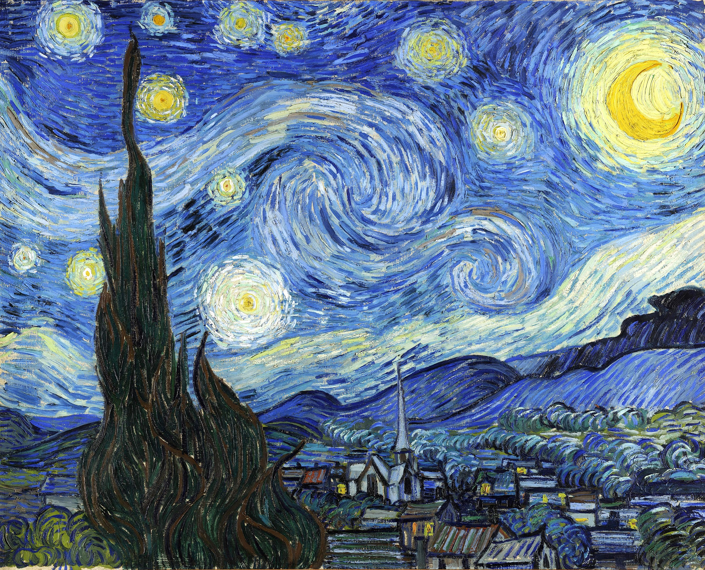
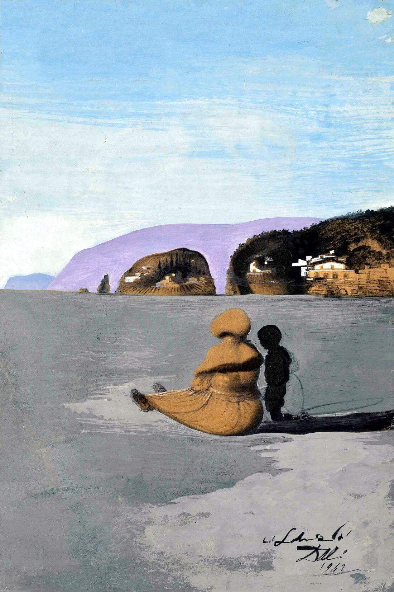
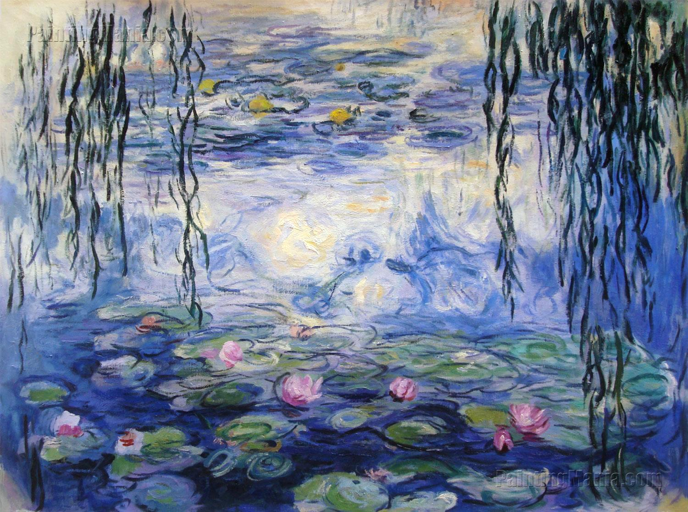
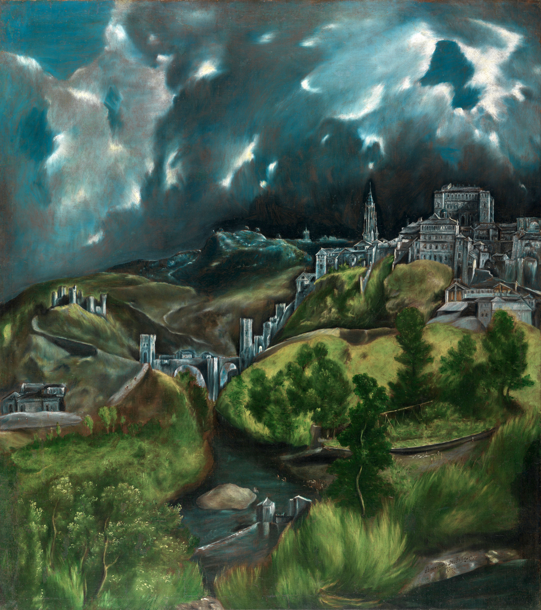
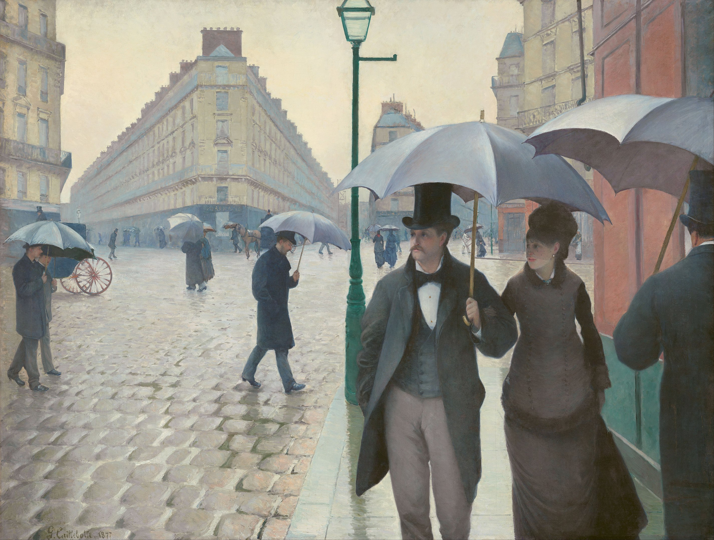
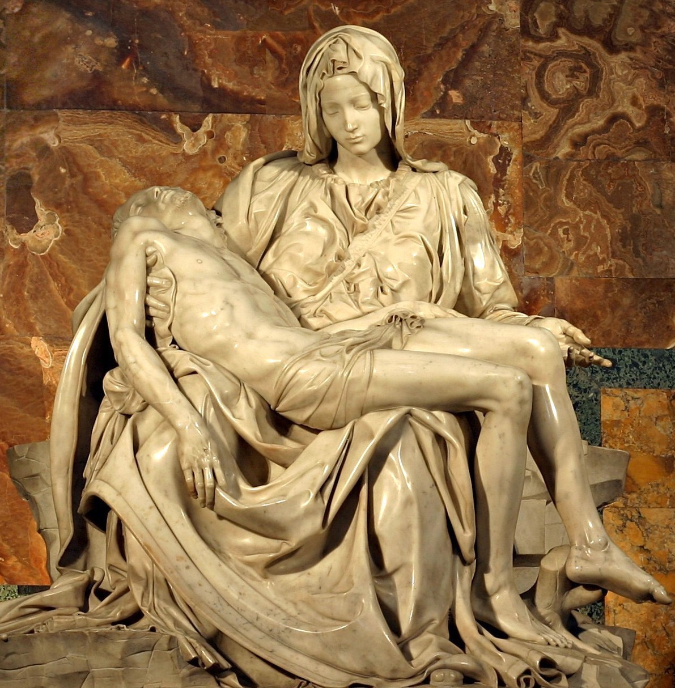
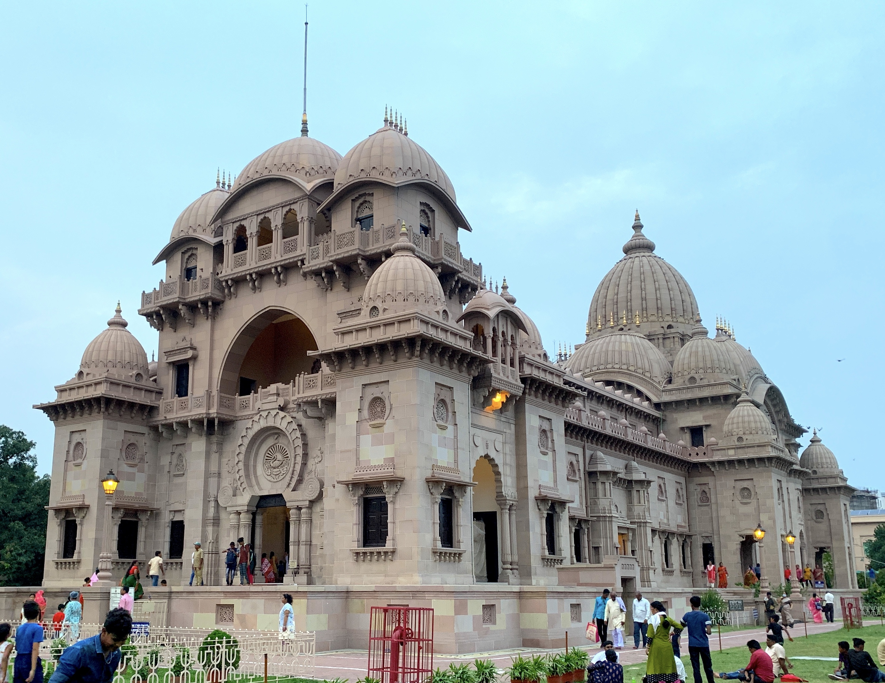
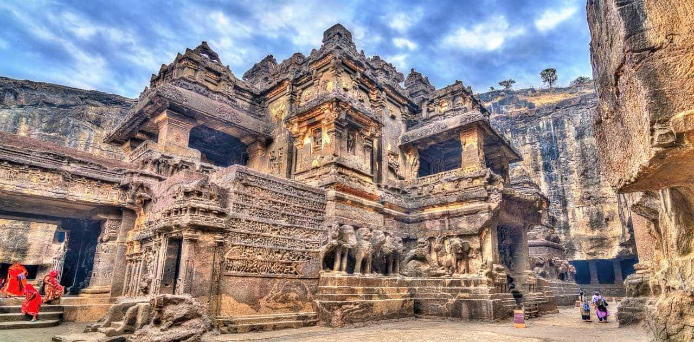

Visual Art
“Art is never finished, only abandoned.”
– Leonard da Vinci
“Art enables us to find ourselves and lose ourselves at the same time.”
– Thomas Merton
“Art is either plagiarism or revolution.”
– Paul Gauguin
“Have no fear of perfection - you’ll never reach it.”
– Salvador Dalí
“Let’s go and get drunk on light again – it has the power to console.”
– Georges Seurat
A few from my favorite artistic creations..

Untitled
(Bird and tree)
by Jagadish Swaminathan, Oil on canvas

‘Starry Night’
by Vincent Van Gogh, 1988, Oil on canvas

‘Adolescence’ by Salvador Dali, 1941, gouache, pen, brush and India ink and pencil on magazine cover

‘Water-Lilies’
by Claude Monet, 1916-1919, Oil on canvas

‘Christina’s World’
by Andrew Wyeth, 1948, Tempera on panel

‘Cafe Terrace at Night’
by Vincent Van Gogh, 1988, Oil on canvas

‘Salisbury Cathedral from the Bishop’s Grounds’ by John Constable, 1823, Oil on canvas

‘View of Toledo’ by El Greco, 1596–1600, Oil on canvas

‘I and The Village’ by Marc Chagall, 1911, Oil on canvas

‘The West Wind’ by Tom Thompson, 1917, Oil on canvas

‘Paris Street, Rainy Day’ by Gustave Caillebotte, 1877, Oil on canvas

‘Pietà’
by Michelangelo, 1499, Marble

‘Taj Mahal’, 1631–1653, Marble

‘Belur Math, India’

‘Ajanta Caves, India’
…More will be added when have time…